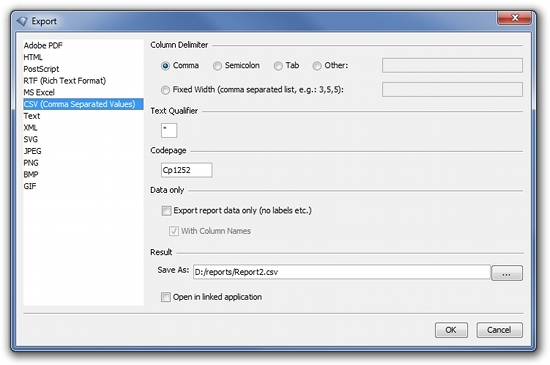

CSV Export
With the following properties you can configure the CSV export.

Column Delimiter
The parameter "delimiter" specifies the delimiter that separates the fields. By default, a comma is used.
Fixed Width
The parameter "colswidth" specifies a comma separated list of fixed column widths, e.g. 3,5,5 or 5,5,,4. The following default values will be used for columns without specified width:
- String: 8 characters
- Number: 10 characters
- Currency: 11 characters
- Boolean: 6 characters
- Date: 11 characters
- Time: 9 characters
- DateTime: 21 characters
If this parameter is specified the exported csv file will not contain column delimiters and text qualifier.
Text Qualifier
The parameter "quotechar" specifies the character that will be used as text qualifier. By default, a quotation mark is used.
Codepage
The parameter "encoding" specifies the encoding for the csv file. By default, the server default encoding is used.
Export report data only
Specifies if the created CSV file contains only the data of the report and no labels and layout information.
With column names
The parameter "columnnames" specifies if the exported CSV file contains column names in the first row. The default value is true.
This parameter is useful for data export, only.